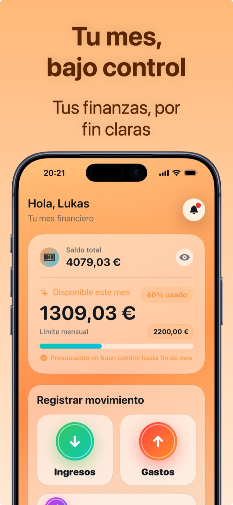

Cómo hacer un presupuesto mensual (que cumplas de verdad)
Un presupuesto mensual no es un castigo: es decidir por adelantado cuánto puedes gastar, para dejar de descubrirlo a fin de mes. El secreto no es hacerlo perfecto — es hacerlo realista y controlarlo en 5 segundos al día.
Paso 1 — Parte de lo que gastas de verdad
El error clásico es fijar un presupuesto «optimista» (p. ej. 800 €) cuando históricamente gastas 1.300 €: al primer exceso lo abandonas. Primero controla los gastos durante 2-4 semanas (o mira el extracto de los últimos 3 meses) y calcula tu media real. El primer presupuesto útil es: media real − 10 %. Recortes pequeños pero sostenibles.
Paso 2 — Un solo número, luego las categorías
Mucha gente lo deja porque empieza con 15 presupuestos separados. Empieza con un único límite mensual para los gastos variables (excluye alquiler/hipoteca y facturas, que son fijos). Tras un par de meses, cuando conoces tus números, puedes razonar por categoría: comida, transporte, ocio…
Paso 3 — Contrólalo cada día, en 5 segundos
Un presupuesto que solo miras a fin de mes es una esquela. Necesitas tres números siempre visibles:
- Cuánto queda del presupuesto;
- La media diaria que aún puedes gastar;
- La previsión: a este ritmo, ¿llego a fin de mes?

Paso 4 — Pasarse no es fracasar
Un mes por encima del límite es un dato, no una derrota: mira qué categoría se ha pasado y decide si recortas ahí o subes el presupuesto. El presupuesto correcto es el que cumples 10 meses de cada 12 — si los cumples los 12, probablemente sea demasiado holgado.
Cómo fijar el presupuesto mensual en Crena
- Abre Crena y fija tu límite mensual (p. ej. 2.200 €).
- Registra los gastos en dos segundos (o con un toque desde el widget): el disponible se actualiza en tiempo real.
- En Inicio ves cuánto queda, el porcentaje usado y la media diaria; Crena te dice si vas «en buen camino» hasta fin de mes.
- En el Calendario controlas el presupuesto del mes y los gastos día a día.
- A fin de mes abre Estadísticas: categorías, top de gastos y evolución — así ajustas el presupuesto del mes siguiente con datos, no con esperanzas.
Preguntas frecuentes
¿De cuánto debe ser mi presupuesto mensual?
¿El presupuesto debe incluir alquiler y facturas?
¿Qué hago si me paso a mitad de mes?
Prueba Crena gratis
Gastos en dos segundos, presupuesto mensual y estadísticas claras. Sin registro y sin vincular la cuenta.
Descargar enApp Store